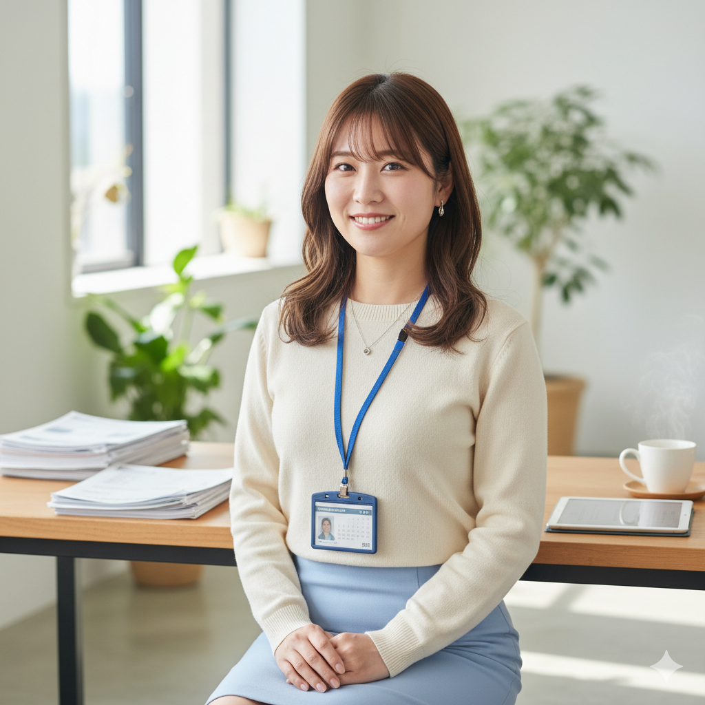

Interview
2020年入社（新卒）

「最初の配属で人事に。最初は戸惑いもあったけれど、今は天職だと思っています。」
入社後3年で採用リーダーに抜擢。新卒採用の企画から内定者フォローまで一貫して担当し、毎年100名以上の採用に携わっています。人と組織が出会う瞬間を設計できるこの仕事が大好きです。候補者一人ひとりと向き合い、会社の良さを伝えながら、双方にとってベストなマッチングを目指す日々です。
A Day in the Life
採用チームリーダーとして活躍する田中の、リアルな1日を公開します。
出社・メール確認（自宅からリモート）
週3日はリモートワーク。採用管理システムで応募状況を確認し、当日の面接官へのリマインドを送信。
採用チームの朝会（15分）
チームメンバー5名でその日の面接・イベント・タスクを共有。ボトルネックがあれば即相談・即対応。
書類選考・面接フィードバック整理
前日の面接フィードバックをまとめ、合否判定のための資料を作成。候補者への丁寧なコミュニケーションを心がける。
候補者面接（オンライン）×3件
1次面接担当として、候補者の強みとカルチャーフィットを確認。面接は「双方向の対話」を意識。
採用戦略MTG（月1回）
人事部長・各チームリーダーと来期採用計画を議論。KPI進捗確認とキャンペーン施策の検討。
メンバーとの1on1（隔週）
後輩の悩みやキャリアについて30分間話す。「自分もこうしてもらいたかった」と思うサポートを意識。
翌日準備・退勤
翌日の面接シートを準備して終業。フレックス活用で17時台に上がることも多い。